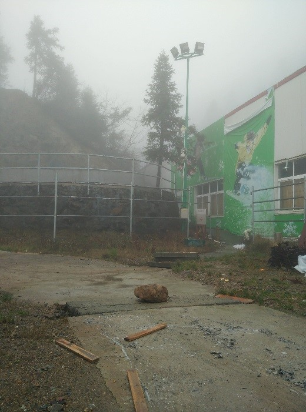
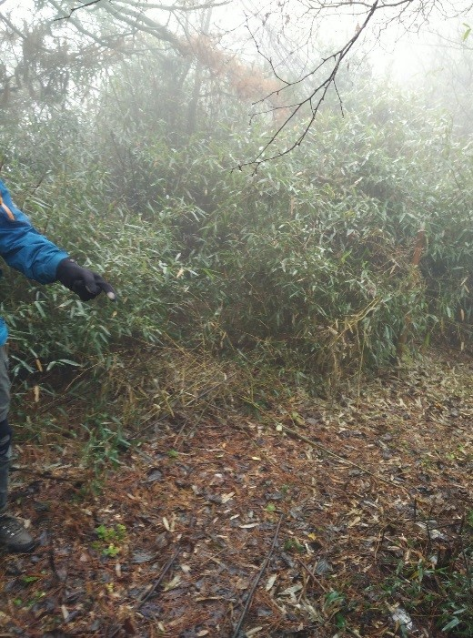

发信人: WiniM(WiniM), 信区: outdoor
标 题: 201511-大明山探路队记记录
发信站: 饮水思源 (2015年11月26日01:05:55 星期四)
20151120-20151121大明山探路 队记记录
第0天
12：13 东26与植物园之间，上了优步叫的车，出发
12：20 到北一门(因为上车之前文颖发现登山杖没拿，于是到小蚊子寝室拿他的登山杖)
13：45 到上海长途客运站
14：13 上车
14：16 开车，发现这车要到上海南站，rlgl。。。
14：59 到上海南站
18：05 到临安，换小车，跟小车司机商量，加180送到大明山
19：10 到向导家
screen.width - 200){this.width = screen.width - 200}">
20：51 吃完饭
21：09 睡觉
screen.width - 200){this.width = screen.width - 200}">
第1天
05：30 起床
06：10 开始吃早餐
06：39 出发
06：50 第一个过溪点
06：55 第二个过溪点，之后下包调整
07：02 到小梯田
07：20 遇到岔路，左边是溪，右边有明显的路。李耀宇和麻磊下包去右边探路
screen.width - 200){this.width = screen.width - 200}">
screen.width - 200){this.width = screen.width - 200}">
07：43 给zzm打电话之后发现他们当时没有溯溪，于是决定往回走
07：55 回到岔路口，沿着航迹往前走
08：00 小梯田
08：05 看见岔路
screen.width - 200){this.width = screen.width - 200}">
往右边探路，发现右边的路在航迹上，于是往左边走
08：23 稍微调整一下
09：03 看见一个V-1的大石头，除潘雨航外轻松上，冬训线可能要布绳
screen.width - 200){this.width = screen.width - 200}">
screen.width - 200){this.width = screen.width - 200}">
略调整
09：09 开始走
09：20 貌似看到了悬崖。。？
09：29 路右边有岔路，估计是会员线的地方
09：31 麻磊前去探路
09：36 看见瀑布，有小溪，可能是会掉水里的悬崖？

screen.width - 200){this.width = screen.width - 200}">
screen.width - 200){this.width = screen.width - 200}">
09：43 李耀宇到瀑布重装探路，麻磊上山轻装探路
09：57 文颖，李耀宇过了瀑布，找到路，路上很多垃圾
screen.width - 200){this.width = screen.width - 200}">
10：08 潘雨航和麻磊到，下包休息
screen.width - 200){this.width = screen.width - 200}">
10：31 可作午餐点
10：43 休息五分钟
11：17 第一次到公路
screen.width - 200){this.width = screen.width - 200}">
沿公路向右走一点，上山
screen.width - 200){this.width = screen.width - 200}">
11：32 第二次到公路
PS：其实上公路之后，应该往右，然后沿着公路一直走，直到没路了，看见房子，再进山。
11：40 上公路后往右走，看见一个告示牌，牌子右边有路，有树横着挡着

11：41 入口处吃午饭
12：06 出发
12：38 发现偏离航迹，决定往前走
12：42 发现一个岔路口，往左边探了一下路
12：47 开始走，决定往右
screen.width - 200){this.width = screen.width - 200}">
12：51 发现到景区了，有栏杆，水泥路。打电话问了向导，景区能到千亩田，但是要收门票。决定回去，刚才岔路口应左拐
screen.width - 200){this.width = screen.width - 200}">
12：59 回到岔路口，往左走。李耀宇去重装探路，带对讲机。发现是一条老路，路不是非常明显，决定往回走，回航迹上
screen.width - 200){this.width = screen.width - 200}">
13：30 回到航迹上

13：43 发现走的路不像路
screen.width - 200){this.width = screen.width - 200}">
14：56 从没有路的密林出来，到达oldtrail，一个大平地，有电箱，明显人工痕迹。下包休整
screen.width - 200){this.width = screen.width - 200}">
screen.width - 200){this.width = screen.width - 200}">
screen.width - 200){this.width = screen.width - 200}">
screen.width - 200){this.width = screen.width - 200}">
screen.width - 200){this.width = screen.width - 200}">
15：13 出发，发现麻磊包上的对讲机掉了
15：25 到滑雪场的房子处，遇到一个师傅，说往右走，走索道，可到千亩田
screen.width - 200){this.width = screen.width - 200}">
 screen.width - 200){this.width = screen.width - 200}">
滑雪场房子处往左走，山上的小路，一路很多坨**
screen.width - 200){this.width = screen.width - 200}">
16：03 过了X(别人的航点，估计是岔路口)，发现偏离航迹。李耀宇在X处去探路
探路结果是那边是老路，路径很不明显，决定回滑雪场，走索道那边
此时加载出了一条 昱岭关全程 的航迹，发现走一段路应该会和这条航迹汇合，于是李耀宇和潘雨航去轻装探路
探路回来发现那边真的有一条很明显很大的路
16：27 往昱岭关全程的航迹出发
16：38 到昱岭关的航迹上，真的是很大的一条路
17：01 看见破木屋
screen.width - 200){this.width = screen.width - 200}">
screen.width - 200){this.width = screen.width - 200}">
17：35 到一个路上可扎营的地方，吃路餐
17：47 吃完出发
出发后不久发现偏离航迹，但是听到水声，于是潘雨航李耀宇去重装探路
17：57 两人回来，探路结果是那边不在航迹上，有小溪，决定回刚才路餐点扎营
18：05 到路上可扎营的地方扎营
22：15 睡觉
第二天
05：40 起床
screen.width - 200){this.width = screen.width - 200}">
08：05 出发
在出发之前，李耀宇找到正确的路，被一堆一米深的竹子挡住了
 screen.width - 200){this.width = screen.width - 200}">
08：41 到达一个木桥，水源极佳，一路上可扎营，能容纳一排帐篷，猜测是小桥营地

screen.width - 200){this.width = screen.width - 200}">
screen.width - 200){this.width = screen.width - 200}">
08：54 路过一个岔路，往右
screen.width - 200){this.width = screen.width - 200}">
09：03 木桥，有溪，潘雨航战战兢兢过溪点，底下过更好
09：05 岔路，千亩田路标
应往右，往左是昱岭关的路
然而我们往左探了一下
screen.width - 200){this.width = screen.width - 200}">
09：12 到小石屋，去年冬训第二天吃路餐的地方
screen.width - 200){this.width = screen.width - 200}">
09：34 到石头屋
screen.width - 200){this.width = screen.width - 200}">
screen.width - 200){this.width = screen.width - 200}">
screen.width - 200){this.width = screen.width - 200}">


screen.width - 200){this.width = screen.width - 200}">
screen.width - 200){this.width = screen.width - 200}">


screen.width - 200){this.width = screen.width - 200}">
screen.width - 200){this.width = screen.width - 200}">
09：43 石头屋出来，应该走右边那条路
我们走的是左边的路，路上很多坨 ，被人硬探出一条路。回到路上时航点标记为 日狗的斥候
09：45 小营地，可搭一顶帐篷
screen.width - 200){this.width = screen.width - 200}">
09：58 路右边有岔路
10：24 第一个难点
screen.width - 200){this.width = screen.width - 200}">
10：29 第二个难点
screen.width - 200){this.width = screen.width - 200}">
10：31 到布绳点
11：05 下完布绳点
12：22 到去年昱岭关羊羊羊掉水里的地方
screen.width - 200){this.width = screen.width - 200}">
12：46 到小梯田
screen.width - 200){this.width = screen.width - 200}">
13：44 到老王家
换衣服
14：10 休整过后，老王送我们到村口
14：15 无缝对接 坐大明山到昌化的大巴
15：09 到昌化
15：40 昌化到杭州的大巴开车
17：10 到杭州西站
17：40 上B4公交车
19：00 到杭州东站，取票，吃大娘水饺
19：57 动车从杭州东站出发
21：06 动车到虹桥火车站
21：29 上虹桥枢纽5路
22：22 到剑川路下车，打的回学校
最后上合照：
screen.width - 200){this.width = screen.width - 200}">
screen.width - 200){this.width = screen.width - 200}">
screen.width - 200){this.width = screen.width - 200}">
screen.width - 200){this.width = screen.width - 200}">
行诸山野，立命天地
--
※ 来源:·饮水思源 bbs.sjtu.edu.cn·[FROM: 211.80.54.35]
※ 修改:·WiniM 于 2015年11月26日14:24:01 修改本文·[FROM: 10.185.168.30]
|